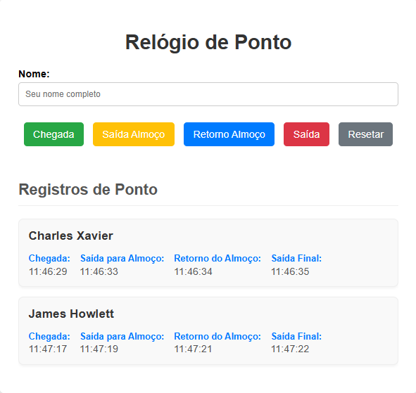
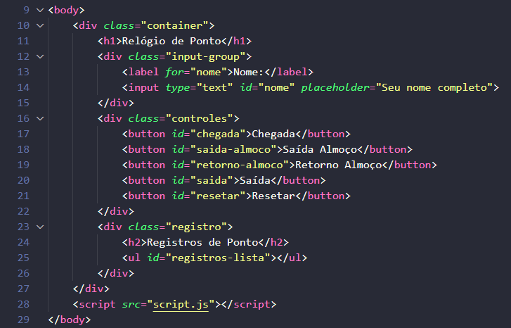
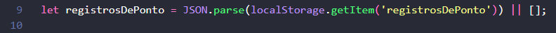
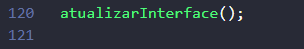

Relógio de Ponto

🯠Objetivo do Projeto
Criar um sistema de registro de ponto usando HTML, CSS e conceitos de objetos e construtor em JavaScript.
O sistema deve permitir que o usuário registre os horários de chegada, saÃda para almoço, retorno do almoço e saÃda final.
Os dados devem ser salvos no navegador localStorage para que não se percam ao recarregar a página.
🧱 Estrutura HTML
👇 Primeiro, vamos construir o HTML. O código abaixo cria o tÃtulo, o campo para o nome e
os botões de controle.

👉 A lista ul com o id="registros-lista" é onde os horários registrados vão aparecer.
🧩 1. Mapeamento dos Elementos no JavaScript
👇 Para o JavaScript "enxergar" os elementos que criamos no HTML, precisamos mapeá-los, ou
seja, guardar cada um em uma variável. Usamos document.getElementById para isso.
👉 Repare que estamos salvando a tag inteira na variável, e não seu valor ou seu texto.
Isso ocorre especificamente pois a variável precisa ser o elemento completo para que você possa interagir
com ele, seja para adicionar um evento, modificar seu estilo ou acessar suas propriedades.
💾 2. Criando o localStorage
👇 O localStorage é como uma "memória" do seu navegador. Ele permite que os dados
persistam mesmo depois que você fecha a página. Mas ele só armazena texto, então precisamos de duas funções
especiais para converter nossos dados.
👇 let registrosDePonto é um array e serve para armazenar todos os objetos de ponto.

👉 Esta programação é crucial. Ela verifica se já existem dados salvos no localStorage do
navegador. Se houver, ela os carrega; se não, ela inicia um array vazio [ ].
🔮 O localStorage só consegue armazenar texto (strings). O nosso array de registros, no
entanto, é um conjunto de objetos de JavaScript. Para isso temos que usar o JSON.parse().
🔮 JSON.parse() é uma função que faz o trabalho de converter uma string de texto (que foi
salva no localStorage) de volta para um objeto ou array de JavaScript, para que possamos manipulá-lo
novamente.
🔮 Se algo dentro do getItem existir, o método retorna o
seu valor (que é sempre uma string).
👉 registrosDePonto não é uma variável e sim o que chamamos de key "chave". Essa key é
o nome que damos para identificar o que será salvo.
🔮 Repare que: temos dois registrosDePonto um na cor branca e um na cor amarela. O que está de branco será sempre a referência a 👉variável, em amarelo é referente a 👉key
🔮 Se a chave não existir (por exemplo, na primeira vez que o usuário acessa a página), o
método retorna null.
👉 || [ ] Este é o operador lógico "OU". Ele funciona como uma "válvula de segurança".
🔮 O JavaScript avalia a expressão à esquerda:
JSON.parse(localStorage.getItem('salvelocal')).
🔮 Se essa expressão retornar um valor "falso" (como null, que é o caso quando não há dados
salvos), o operador || ignora o resultado e imediatamente retorna o valor à sua direita, que é [] (um array
vazio).
🔮 O que isso significa? Significa que, se não houver registros salvos, a variável
salvelocal não ficará com o valor null, mas sim com um array vazio, evitando erros e permitindo que você
adicione novos registros sem problemas.
👉 Resumindo, a linha let registrosDePonto = JSON.parse(localStorage.getItem('registrosDePonto')) || [ ]; tenta
carregar os dados salvos e, se não encontrar nada, inicia um array vazio, pronto para ser usado!
🖱️ 3. Conectando os Botões aos Eventos
👇A execução do projeto começa quando "ouvimos" os cliques nos botões e dizemos ao
JavaScript qual função ele deve executar.
🔮 Repare que: dentro das funções dos botões temos, em amarelo, parâmetros sendo passados para as funções.
👉 O método addEventListener é usado para "escutar" um evento, como o click do mouse.
Quando o evento acontece, a função dentro dele registrarPonto é executada.
👉 Em const confirmar = confirm("...") Criamos a variável e a mensagem de confirmação para
apagar os registros.
👉 No botão de resetar, usamos localStorage.removeItem(...) para apagar a chave de registro "Key"
do navegador, limpando completamente os dados.
👉 No if basicamente o navegador mostra uma caixa de diálogo com dois botões: "OK" e
"Cancelar". O confirm retorna um valor booleano: true → se o usuário clicou em OK, false → se o usuário
clicou em Cancelar.
📠4. Classe Ponto e Construtor do objeto
👇 Uma classe é um modelo ou molde para criar objetos com caracterÃsticas e comportamentos
semelhantes. Para organizar nossos dados, vamos criar uma class chamada Ponto. Pense nela como uma "fábrica"
que cria objetos com a mesma estrutura. Cada objeto Ponto terá o nome de uma pessoa e um lugar para guardar
os horários.
👇 Não esqueça que estamos falando de horários "Pontualidade" e não de pontuação. Por isso
o nome Ponto na classe.
👇 A função constructor é executada quando um novo Ponto é criado. Ela recebe o
nome como parâmetro e já prepara os espaços para os horários.
👉 O ponto e vÃrgula no fechamento da chave é necessário para finalizar a declaração do
construtor da classe.
👉 chegada: null, saidaAlmoco: null, retornoAlmoco: null, saida: null 👉 São chamadas de propriedades.
👉 O método registrarHora é o coração da nossa classe. Ele recebe o tipo de registro (por
exemplo, "chegada"). A linha this.registros.hasOwnProperty(tipo) é um método que verifica se um objeto
possui uma determinada propriedade. Isso evita que você tente registrar um tipo de ponto que não existe,
como, por exemplo, "janta".
👉 O return acontece quando o método de registrar hora não acontecer. Neste caso temos o
return, e nele você só precisa escrever uma mensagem de registro inválido.
👉 O método registrarHora(tipo) recebe um tipo de horário,
como chegada, saidaAlmoco, retornoAlmoco ou saida. Se o tipo de horário fornecido for um dos tipos válidos
do objeto registro, o método atribui a data e hora atuais a esse tipo e, em seguida, retorna a mensagem:
Ponto de entrada registrado para “nome registrado no input”. Caso o tipo de horário não seja válido, o
método retorna uma mensagem de erro. O método obterRegistro serve para recuperar os horários que foram
registrados. Se apenas um horário foi registrado, ele retorna apenas esse. Se vários horários foram
registrados, ele retorna todos eles.
💾 5. Salvando e Recuperando Dados com localStorage
👉 Na função salvarRegistros() o JSON.stringify(registrosDePonto) transforma o array de objetos em uma string de
texto no formato JSON, pois o localStorage só consegue guardar texto.
localStorage.setItem('registrosDePonto') guarda essa string na "key" chamada registrosDePonto (essa é a
chave, ou seja, o nome que usamos para identificar esse dado). Depois, sempre que precisarmos acessar os
dados salvos, usamos essa mesma chave.
👉 Na função encontrarPontoPorNome(nome), ela recebe um valor (nome). Usamos o find() para procurar no array o primeiro objeto onde
ponto.nome seja igual ao nome informado. Os dois são convertidos para minúsculas com .toLowerCase() para
evitar problemas com maiúsculas/minúsculas (por exemplo, "BERNARDO" e "bernardo" são tratados como iguais).
Se encontrar, retorna o objeto inteiro com os registros da pessoa, se não encontrar, retorna undefined.
🔄 6. Atualizar a interface
👉 A função atualizarInterface() é responsável por atualizar o que o usuário vê na
tela, exibindo os nomes e horários registrados.
👉 registrosLista.innerHTML = '' é a variável que recebeu nosso id da ul, passamos nada pra ela, para evitar duplicação.
👉 O if (registrosDePonto.length === 0) verifica se há registros. Se for 0, significa que ninguém registrou ponto
ainda, então mostra apenas a mensagem "Nenhum registro encontrado" e sai da função com return.
👉ponto👈 dentro do forEach é o parâmetro que usamos próprio do forEach para o item atual, ele só está com o nome de ponto.
Esse item atual é em relação ao array registrosDePonto que criamos lá na parte do localStorage.
👉 No forEach, para cada item do nosso array de registrosDePonto, criamos uma li com divs para a pessoa,
ou seja: O forEach serve para criar o HTML de cada pessoa que tem um ponto salvo. Primeiro adiciona o nome da pessoa dentro da div class="nome-pessoa".
Depois, na div class="horarios-ponto" é uma div que fica aberta por enquanto, pois vamos criar mais divs dentro dela.
👉 const registros = ponto.registros é a variável registros e recebe o item com tudo que tem dentro dele, como uma referência
👉 for in... percorremos todos as chaves de registros, que na verdade tem tudo o que foi registrado dentro dela, cada volta que o for faz ele usa um dos tipos por exemplo: chegada, saidaAlmoco etc. Isso significa que, para cada tipo de registro feito, será executado a programação dentro do for.
👉 console.log("Registro tipo = "+registros[tipo]) é o horário
👉 console.log(tipo) é a chegada, saidaAlmoço etc...
👉 No if, se ele achar um horário, então ele formata os textos. Essa formatação acontece pelo switch case, cada caso é um tipo que formata verificando o valor desse tipo, default e para caso termos outro tipo de ponto que não existir. Ele não vai formatar o texto mas irá rodar o código mostrando esse tipo. Exemplo, horas extras.
👉 html += Adicionamos para a variável html uma div com a classe item-ponto, já com todo css dentro dela. Teremos uma div com a variável tipoFormatado, para mostrar o tipo de ponto, também teremos outra div com a variável registros[tipo] que é o horario
👉 Fora do for temos a variável html recebendo e acrescentando ao que já temos nela, o fechamento das tags da div principal e da li.
👉 Por último temos a variável registrosLista, que é a variável que recebeu o id da lista ul. Essa variável vai receber a outra variável html escrevendo no html.registrosLista.innerHTML += html
🰠7. Função principal para registrar ponto
👇 A função abaixo é a mais importante de todas.
👉 A função registrarPonto(tipo) é a principal, pois gerencia todo o
processo: verifica se o nome foi inserido, busca o registro da pessoa, cria um novo se não existir, registra
a hora do ponto, salva os dados no localStorage e, por fim, atualiza a interface.
👉 A primeira coisa que essa função faz é receber o que está sendo passado pelos botões. Lembrando que quando clicamos em algum botão estamos passando o tipo de ponto desse botão, exemplo: chegada.
👉 Depois de receber o valor de algum botão, a variável nome recebe o valor da variável do input de nome com nomeInput.value e
usar o .trim() para remover espaços em branco no inÃcio e no fim. Em seguida, o if (!nome) verifica se a
string nome está vazia ou se contém apenas espaços. Se não tiver um nome, um alert é exibido e a função para
com return.
👉 Depois, a linha let pontoDoDia = encontrarPontoPorNome(nome) usa a função auxiliar que
criamos para procurar se já existe um registro para o nome digitado. Se o registro for encontrado, ele será
atribuÃdo à variável pontoDoDia; se não, a variável será undefined.
👉 A próxima linha if (!pontoDoDia) verifica se o registro não foi encontrado. Se for
true, significa que é a primeira vez que essa pessoa está registrando um ponto. Nesse caso, a linha
pontoDoDia = new Ponto(nome) cria um novo objeto usando a nossa classe Ponto, e a linha
registrosDePonto.push(pontoDoDia) adiciona esse novo objeto ao nosso array principal.
👉 Por fim, a linha pontoDoDia.registrarHora(tipo) chama o método da nossa classe para
registrar o horário do ponto. Em seguida, as funções salvarRegistros() e atualizarInterface() são chamadas
para garantir que os dados estejam salvos e a interface seja atualizada. A linha nomeInput.value =
'' limpa o campo de nome, deixando-o pronto para o próximo registro.
📺 8. Inicialização e carregamento do relogio ponto

👉 Chamamos a função atualizarInterface fora de tudo, para que quando iniciar a pagina já mostrar tudo que existe no localStorage